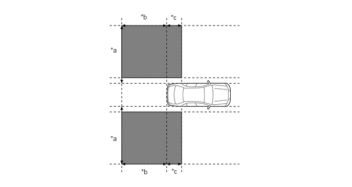
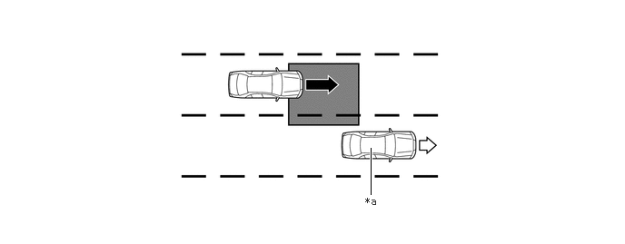
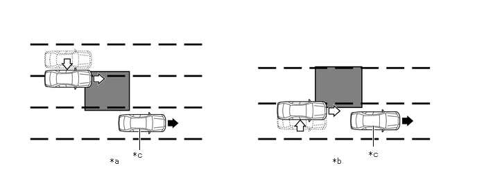
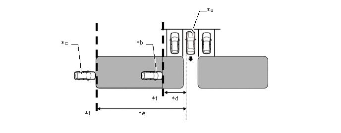
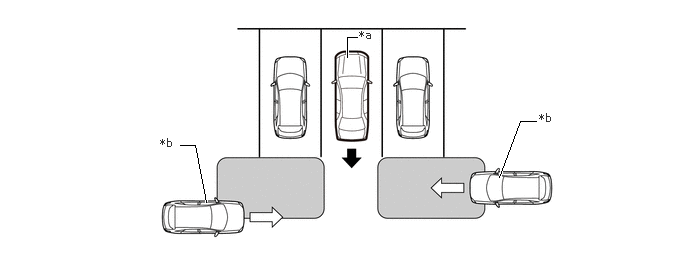

驻车辅助/监视系统 盲区监视系统 控制 盲区监视控制
主要零部件的功能
| 零部件 | 功能 | |
|---|---|---|
|
*1：汽油车型 *2：HV 车型 |
||
| 左侧和右侧盲区监视传感器 | ·
将盲区监视传感器的毫米波传送至盲区传感器检测区域，使用反射的毫米波检测是否有车辆、车辆间距离和相对速度，然后将这些信息传送至内置信号处理电路。 ·
信号处理电路判定是否有车辆，并据此点亮或闪烁车外后视镜指示灯。 ·
使车外后视镜总成上的车外后视镜指示灯变暗。 ·
将指示灯信号发送至车外后视镜总成。 |
|
| 左侧和右侧车外后视镜总成 | 车外后视镜指示灯 | ·
点亮以告知驾驶员在盲区检测区域内检测到车辆。 ·
如果在盲区检测区域内检测到车辆，操作转向信号杆时指示灯闪烁以告知驾驶员。 ·
两个指示灯均闪烁以在驾驶员倒车时通知驾驶员盲区检测区域内检测到车辆。 |
| 组合仪表总成 | 主警告灯 | 盲区监视传感器故障时，或盲区监视传感器判定控制不可行时，主警告灯点亮且多信息显示屏上显示信息以警告驾驶员。 |
| 多信息显示屏 | ||
| BSM 指示灯 | 盲区监视系统打开时，此灯点亮以通知驾驶员。 | |
| RCTA 指示灯 | RCTA 功能打开时，此灯点亮以通知驾驶员。 | |
| 组合仪表总成 | 将转向灯信号发送至左侧和右侧盲区监视传感器。 | |
| 方向盘装饰盖开关总成 | 将来自开关的工作信号发送至螺旋电缆分总成。 | |
| 螺旋电缆分总成 | 将来自方向盘装饰盖开关总成的工作信号发送至组合仪表总成。 | |
| 转向传感器 | 将转向角信号发送至左侧和右侧盲区监视传感器。 | |
| 收音机和显示屏接收器总成 | 接收自驻车辅助 ECU 的视频信号并显示。 | |
| 后电视摄像机总成 | 拍摄车辆后方区域的图像。 | |
| 驻车辅助 ECU | RCTA 图标叠加在获取的图像上。然后，将图像作为视频信号发送至收音机和显示屏接收器总成。 | |
| 空气囊 ECU 总成 | 横摆率传感器 | 将横摆率信息发送至左侧和右侧盲区监视传感器。 |
| ECM*1 | 将倒档信号发送至左侧和右侧盲区监视传感器。 | |
| 混合动力车辆控制 ECU 总成*2 | ||
| 制动执行器总成*1 | 防滑控制 ECU | 将车速信号发送至左侧和右侧盲区监视传感器。 |
| 带主缸的制动助力器总成*2 | 防滑控制 ECU | |
| 主车身 ECU（多路网络车身 ECU） | 将目的地信号、照明信号和变光信号发送至左侧和右侧盲区监视传感器。 | |
| RCTA 蜂鸣器（盲区监视蜂鸣器） | 驾驶员倒车时，在盲区监视传感器检测区域内检测到车辆时鸣响。 | |
系统控制
满足下列 2 个条件时，盲区监视功能运行：
盲区监视功能打开。
车速高于约 16 km/h (10 mph)。
换档杆置于 R 以外的位置。
盲区监视功能可检测到其检测范围内的车辆。
由左侧和右侧盲区监视传感器形成的检测区域如下图所示。

| *a | 约 3.5 m (11.5 ft) | *b | 3.0 m（9.8 ft） |
| *c | 1.0 m（3.3 ft） | - | - |

|
检测区域 | - | - |
相邻车道的另一车辆超过该车时。

| *a | 本车 | - | - |

|
车速（快） | 
|
车速（慢） |
|
|
检测区域 | - | - |
由于变道，另一车辆进入本车的检测区域。

| *a | 由于变道，其他车辆进入本车的检测区域（并入）（类型 1）。 | *b | 由于变道，其他车辆进入本车的检测区域（并入）（类型 2）。 |
| *c | 本车 | - | - |
|
|
本车的行驶方向 |
|
其他车辆的行驶方向 |

|
检测区域 | - | - |
根据工作情况，盲区监视功能通过使用车外后视镜指示灯来告知驾驶员另一车辆已进入本车的盲区监视传感器检测区域，以进一步确保安全性。
未操作转向灯开关时，点亮车外后视镜指示灯来告知驾驶员盲区检测区域内有车，存在车辆并操作转向灯开关时，闪烁来告知驾驶员。
满足以下所有条件时，RCTA 功能工作：
RCTA 功能打开。
换档杆置于 R。
本车车速低于约 8 km/h (5 mph)。
目标车辆的车速在约 8 km/h (5 mph) 和 28 km/h (18 mph) 之间。
RCTA 功能可检测到其检测区域内的车辆。
系统持续测量驶近车辆的相对车速及其距离。如果系统判定驶近车辆将与本车路径交叉，则将计算估算交叉时间 (ECT)。ECT 为 2.5 秒或更短时，系统通过闪烁车外后视镜指示灯和鸣响盲区监视蜂鸣器警告驾驶员。

| *a | 本车 | *b | 目标车辆（约 8 km/h (5 mph)） |
| *c | 目标车辆（约 28 km/h (18 mph)） | *d | 约 5.5 m (18.0 ft.) |
| *e | 约 20 m (66 ft.) | *f | 目标检测线 |
|
|
警报区域 | - | - |
正常驻车

| *a | 本车 | *b | 目标车辆 |
|
|
警报区域 | - | - |
根据工作情况，RCTA 功能通过使用车外后视镜指示灯和盲点监视蜂鸣器来告知驾驶员另一车辆已进入该车的盲点监视传感器警报区域，以进一步确保安全性。
该车倒车时，如果有车辆进入盲点监视传感器的检测区域且判定车辆将与该车的路径交叉，则系统通过闪烁车外后视镜指示灯和鸣响盲点监视蜂鸣器警告驾驶员。
功能
盲区监视系统打开/关闭设置
可通过多信息显示屏分别打开/关闭盲区监视功能和 RCTA 功能。
盲区监视功能指示灯和 RCTA 功能指示灯位于组合仪表总成上，以指示打开/关闭状态。功能打开时指示灯点亮，功能关闭时指示灯不亮。
盲区监视系统设定
通过多信息显示屏上显示的盲区监视器设定画面，可在 2 个等级之间切换车门后视镜指示灯的亮度，并在 3 个等级之间切换 RCTA 蜂鸣器的音量。
诊断
盲区监视系统配备有诊断功能，可以在多信息显示屏上显示警告信息。有关详情，请参考修理手册。